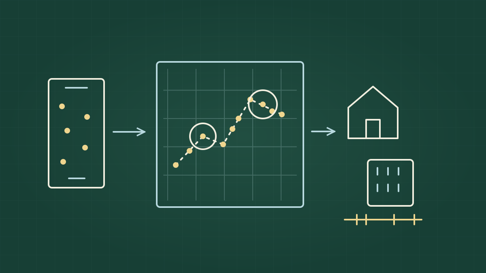
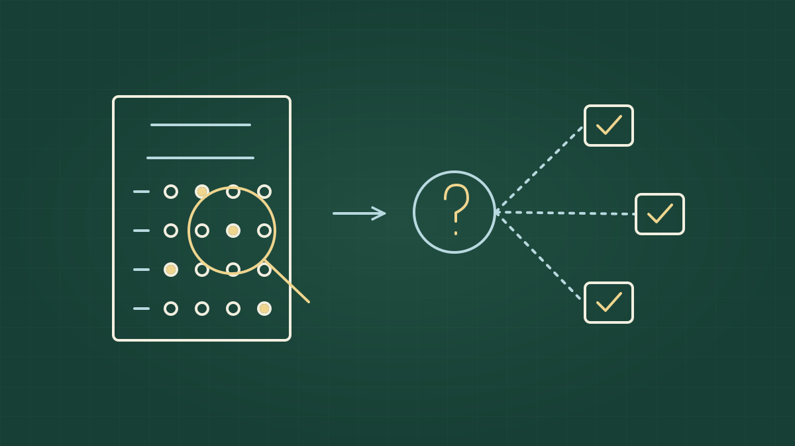
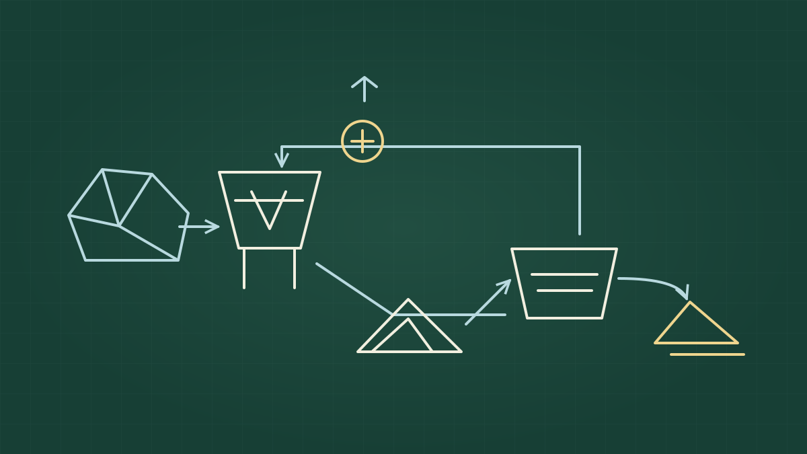
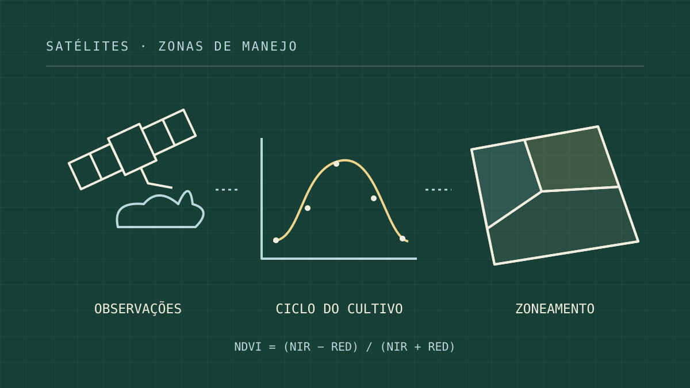
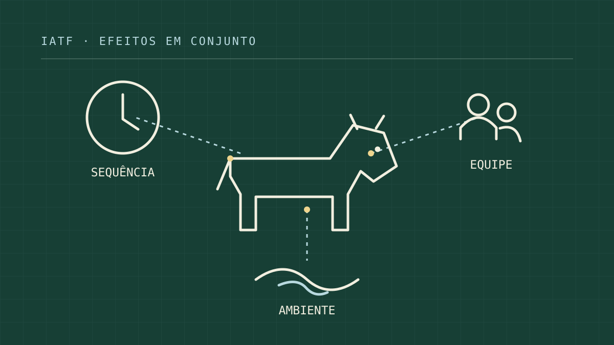
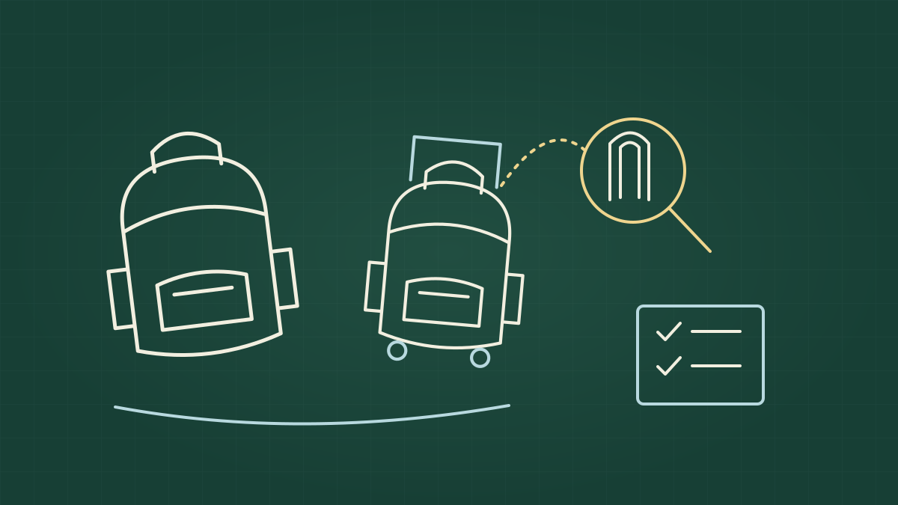

Vinícius Félix
Sobre mim
Portfólio
Publicações
Certificações
Participações
Prêmios
Portfólio
Catálogo de projetos de Vinícius Félix.
Início
Portfólio
Criando meu clone com IA

Ingerindo mais de 1 bilhão de pontos por dia
Uma arquitetura de dados para mais de 100 fontes

Quando provas precisam de provas

Da pedreira à construção: como ir a campo foi mais importante que analisar os dados
O maior datalake da pecuária brasileira

Sombras e nuvens, o maior inimigo para se chegar no verdor de plantas

O que define o sucesso da IA, mas não estou falando de inteligência artificial

UX com produtos físicos, o puro suco da estatística
Sem itens correspondentes